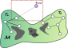
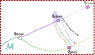
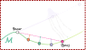
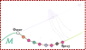
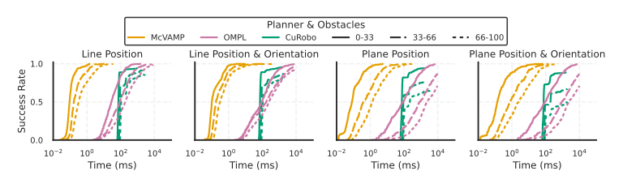
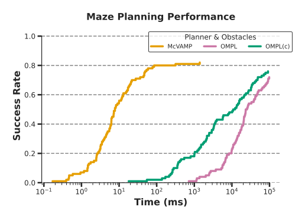
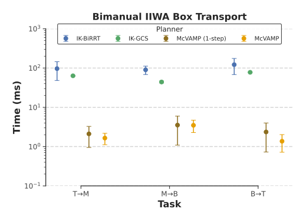

Many robot planning tasks require satisfaction of one or more constraints throughout the entire trajectory. For geometric constraints, manifold-constrained motion planning algorithms are capable of planning collision-free path between start and goal configurations on the constraint submanifolds specified by task. Current state-of-the-art methods can take tens of seconds to solve these tasks for complex systems such as humanoid robots, making real-world use impractical, especially in dynamic settings.
Inspired by recent advances in hardware accelerated motion planning, we present a CPU SIMD-accelerated manifold-constrained motion planner that revisits projection-based constraint satisfaction through the lens of parallelization. By transforming relevant components into parallelizable structures, we use SIMD parallelism to plan constraint satisfying solutions.
Our approach achieves up to 100--2000x speed-ups over the state-of-the-art, making real-time constrained motion planning feasible for the first time. We demonstrate our planner on a real humanoid robot and show real-time whole-body quasi-static plan generation.
We implement a vectorized manifold-projection operator that performs the motion-extension and validation for a constrained RRT-connect planner. By using SIMD parallelism, we are able to perform the projection step for multiple samples in parallel along a connection vector, which significantly speeds up the projection step and helps invalidate infeasible solutions faster, which allows us to solve complex constrained planning problems in milliseconds.




A 7DoF Franka Emika Panda arm with an end effector pose constraint. Here we demonstrate the planner's ability to conform to position and orientation constraints while solving complex motion planning problems in the presense of obstacles.
A 30DoF humanoid robot transporting a box with multiple constraints -- (i) Feet fixed to the ground, (ii) Relative pose constraint between the hands, and (iii) Closed link constraint at the knees and (iv) Center of mass within the support polygon. The robot is able to react to dynamic obstacles in the environment while maintaining all constraints.
Quantitative comparisons across planning tasks are shown below for the 7DoF Panda arm and a 14DoF bimanual IIWA arm



@article{chen2025spasm,
author={Lucas Chen and Shrutheesh R. Iyer and Zachary Kingston},
title={Differentiable Particle Optimization for Fast Sequential Manipulation},
year={2025},
eprint={2510.07674},
archivePrefix={arXiv},
primaryClass={cs.RO},
url={https://arxiv.org/abs/2510.07674},
}